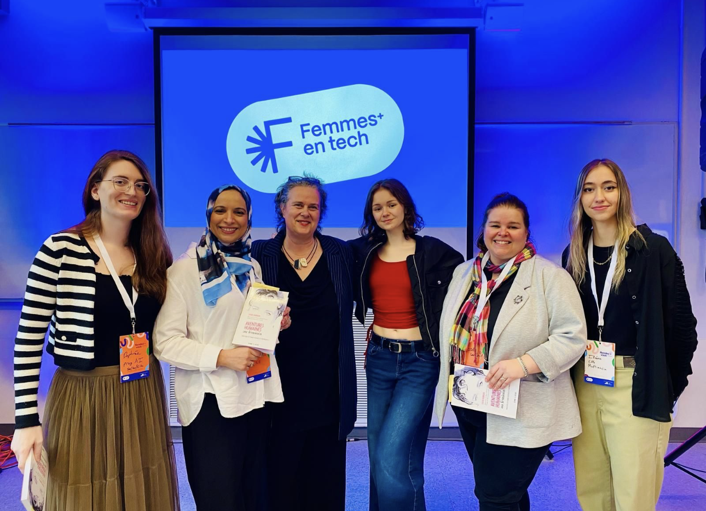
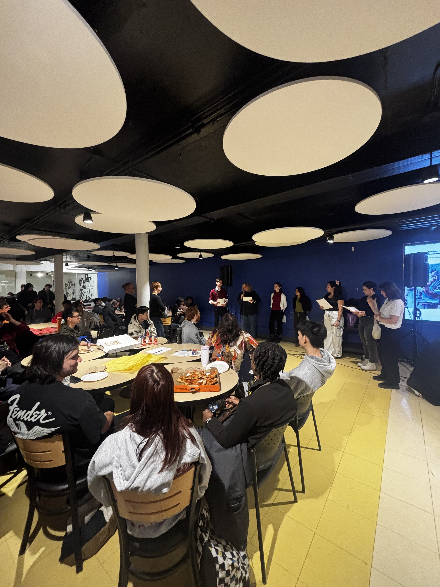
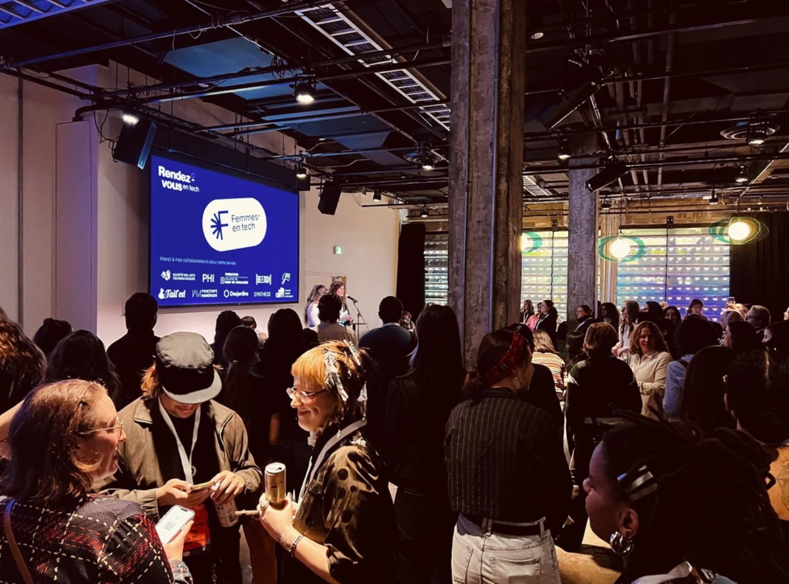
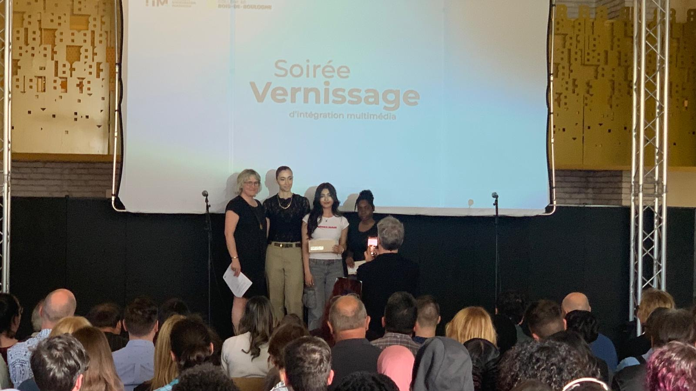

Femmes+ en Tech
Une initiative engagée visant à valoriser la place des femmes dans le domaine technocréatif à travers une expérience interactive et une implication concrète sur le terrain.
Depuis 2025
Coordinatrice
Initiative
Contexte
Avec deux autres étudiantes de mon programme, nous avons repris la coordination de
l’initiative Femmes+ en tech, avec l’objectif de poursuivre et développer son impact au sein
des milieux scolaires (avant, pendant et après les études).
Dans ce cadre, nous organisons différents types d’événements tels que des visites
d’entreprises, des colloques, des panels, des midi-causeries et plein d’autres activités son
à venir ! Visant à créer des opportunités de réseautage, de partage d’expérience
Nous intervenons également directement dans des écoles secondaires pour encourager les
jeunes à s’intéresser aux domaines technologiques, en déconstruisant certains préjugés et en
rendant ces parcours plus accessibles.


Mon rôle
Pour ma part, j’ai contribué à l’ensemble des étapes du projet, incluant l’organisation des
événements, la communication avec les partenaires ainsi que la coordination globale. J’ai
également participé à l'animation un panel et je suis intervenue à plusieurs reprises lors
de présentations auprès d’élèves du secondaire.
Ce projet est mené en parallèle de mes études, au sein d’une petite équipe, ce qui implique
une grande autonomie, une forte implication et une capacité d’adaptation constante.




Mes apprentissages
Ce projet m’a permis de développer des compétences concrètes en organisation, coordination et
communication, en menant des initiatives dans un contexte réel, avec des contraintes de temps et
de ressources.
Au-delà de ces aspects, cette implication a marqué une évolution importante dans ma manière de
me positionner. Elle m’a appris à assumer mes valeurs et à les porter publiquement à travers mes
actions.
J’ai notamment été amenée à prendre la parole dans des contextes que je n’aurais pas envisagés
auparavant, comme l’animation de panels ou les interventions en milieu scolaire. Cette
expérience m’a permis de gagner en confiance et en capacité à communiquer avec
différents publics.
Enfin, ce projet a renforcé ma volonté de m’impliquer dans des initiatives qui dépassent le
cadre technique, en utilisant mes compétences pour créer un impact concret et porteur de sens.